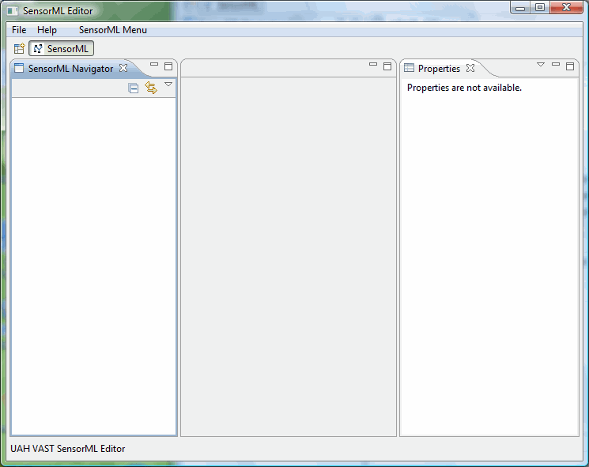

The SensorML Editor Workbench
When the Workbench is launched, a single workbench window is displayed with the SensorML perspective. The perspective contains editors and views including the SensorML Navigator, the properties view, and a placeholder for the SensorML Instance Editor.
A shortcut bar appears in the top left corner of the window. This allows you to open new perspectives and switch between ones already open. The name of the active perspective is shown in the title of the window and its item in the shortcut bar is highlighted.
